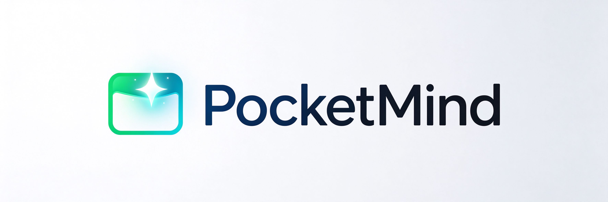
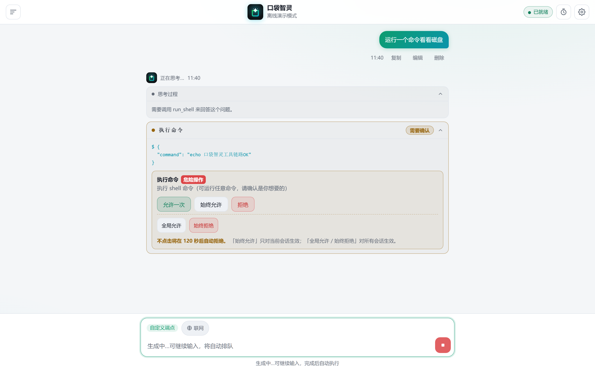
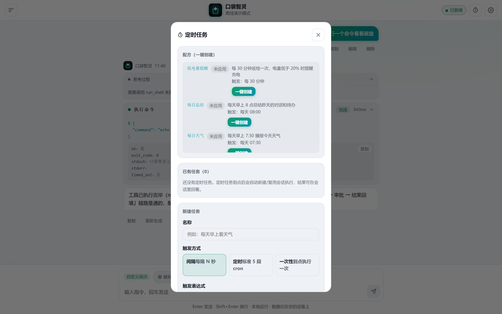
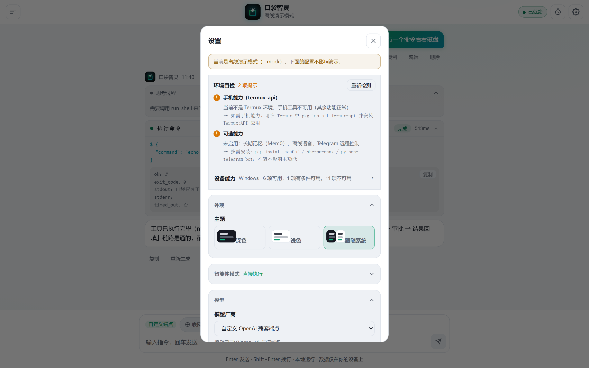
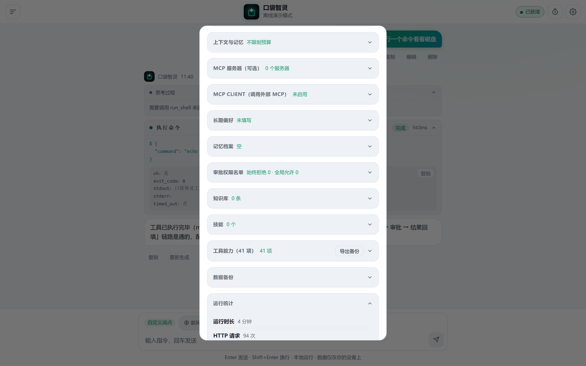
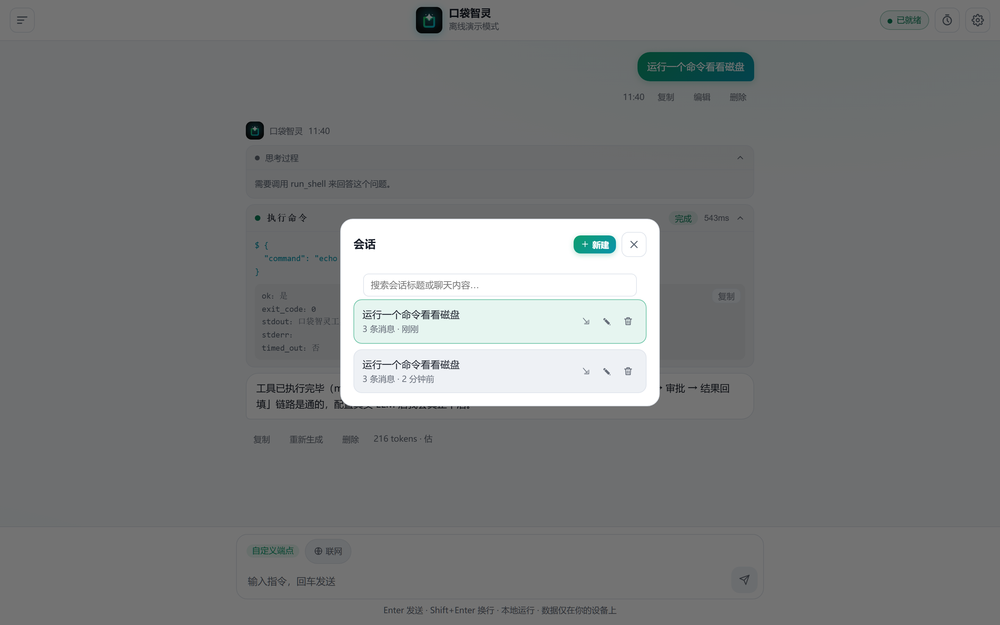
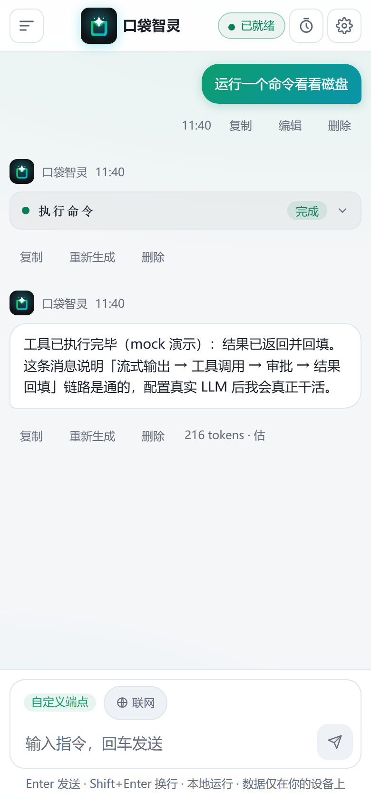

PocketMind 运行在你的安卓手机（Termux）上：发短信、看电池、读定位、写文件、执行脚本——全部本地完成，数据只留在你自己的设备上。
41 个本机工具被当作一等公民深度集成——从短信、定位、传感器到任务清单、知识库与长期记忆，这是 PocketMind 与桌面 Agent 们最大的区别。
电池、定位、传感器、WiFi、剪贴板、通知、短信、电话——25 个 termux-api 原生工具，加上 shell 和文件读写。
会话、消息、记忆、定时任务全部存本机 SQLite（权限 600/700），默认只监听 127.0.0.1，LLM 只负责推理。
写文件、shell、发短信、拨号等危险操作由服务端审批门强制拦截，超时自动拒绝——模型被注入也绕不过。
「先计划」先给执行计划等你批准再动手；「直接执行」收到任务即调用工具。复杂任务不失控。
用户资料存本机知识库，只在你发问时用它检索；技能按 SKILL.md 渐进披露，不占上下文。任务清单一并落库，刷新不丢。
既把 41 个本机工具暴露为标准 MCP Server（stdio），也能接入外部 MCP Server；按注解自动区分只读与危险工具。
出门在外用 Telegram 发消息控制手机，危险操作弹内联审批按钮，与网页共用同一把审批锁。






竖屏 WebUI 与 PWA，随时装进口袋。浏览器打开 http://127.0.0.1:8787 即用，可添加至主屏幕离线使用。
安装 Termux 与 Termux:API 后，克隆并安装依赖：
# 在 Termux 里
pkg install git python termux-api
git clone https://github.com/X33834/pocketmind
cd pocketmind && bash termux/install.sh一键启动（自动装依赖、生成安全令牌、以 --lan 常驻）：
bash termux/start.sh浏览器打开 http://127.0.0.1:8787，在「设置」里填 LLM 的 base_url 与 API Key，开聊。
想先体验全链路？python3 -m agentd.main --mock --port 8787 离线演示模式，不消耗任何 API 额度。
本地优先、隐私保护、Apache-2.0 协议。欢迎 Star、提 Issue、贡献代码。